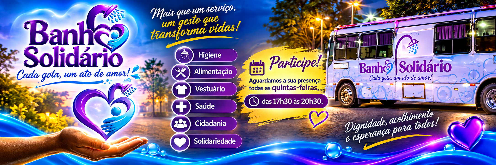

O Projeto Banho Solidário nasceu em 2024 da sensibilidade do senhor Valdemar Zancanaro (Padrinho) diante da vulnerabilidade da população em situação de rua em Unaí-MG. Mais do que um banho quente, oferecemos acolhimento, escuta ativa, alimentação digna e oportunidades reais de reinserção social.
Acreditamos que a verdadeira transformação social começa com respeito, empatia e corresponsabilidade entre sociedade civil, poder público e voluntariado.
O projeto foi estruturado com dedicação através de etapas fundamentais de planejamento e mobilização comunitária:
A projetos semelhantes em outras cidades.
Da sociedade civil, empresários e autoridades.
Para adaptação e estruturação de um ônibus.
De recursos financeiros e suprimentos.
Com apoio de voluntários e servidores municipais.
O impacto do nosso trabalho coletivo reflete em números que transformam vidas:
Atendimentos Realizados (Banho, Rodas de Conversa e Refeições)
Passagens para Retorno ao Município de Origem
Encaminhadas para Comunidades Terapêuticas e Clínicas de Reabilitação
Documentações Emitidas ou Regularizadas
Pessoas encaminhadas para atendimento de saúde especializado na rede municipal
Pessoas encaminhadas para atendimento psicossocial no CAPS AD (CREAS)
Pessoas imunizadas contra influenza
Pessoas encaminhadas ao mercado de trabalho
Pessoas encaminhadas para clínicas fora do município
Pessoas deixaram a situação de rua e passaram a residir em imóvel alugado
O projeto conta com o apoio institucional da Província Carmelitana Santo Elias. Você também pode fazer a diferença doando valores ou suprimentos de higiene (shampoo, sabonete, pastas de dente e toalhas).
financeiro@nossamatriz.com.br